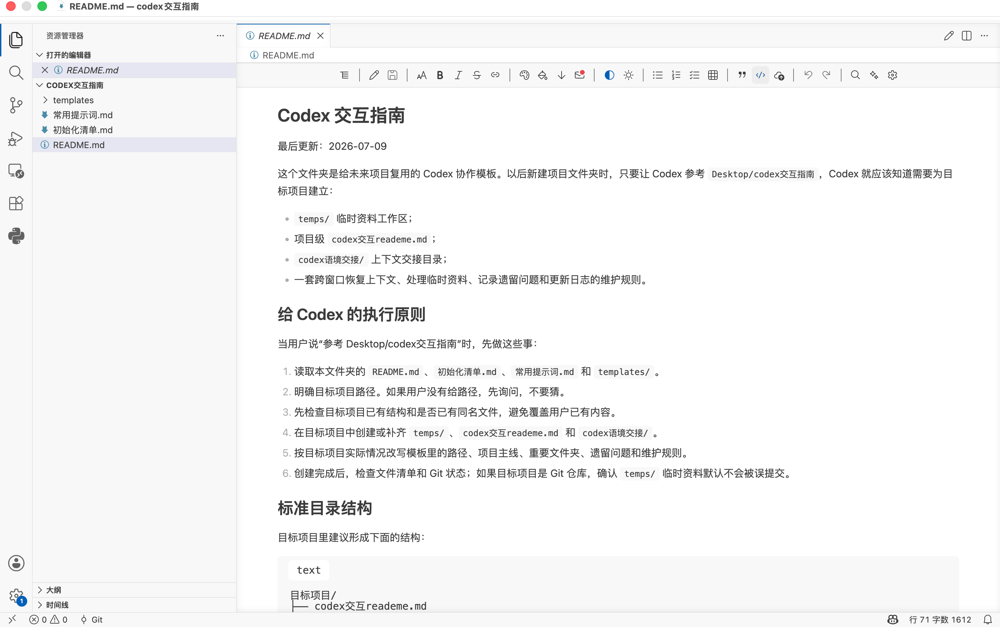

Copy This
直接发给 Codex 的提示词
把下面这段里的项目路径换成你的目标文件夹，再发给 Codex：
请阅读 https://yeyaozhi.eu.cc/assets/codex-guide.html，并按页面中的 Codex 交互指南，为 <目标项目路径> 建立 Codex 交互入口、temps 临时资料区和 codex 语境交接机制。先检查目标项目已有结构和同名文件，再告诉我你准备创建或修改哪些文件，确认后执行。AI Workflow
这页不完全是写给人逐字阅读的教程，也是一份写给 Codex 执行的公开说明书。 如果你也想在自己的项目里建立类似的交接机制，可以直接把本页网址发给 Codex，让它按这里的规则初始化你的项目。
Copy This
把下面这段里的项目路径换成你的目标文件夹，再发给 Codex：
请阅读 https://yeyaozhi.eu.cc/assets/codex-guide.html，并按页面中的 Codex 交互指南，为 <目标项目路径> 建立 Codex 交互入口、temps 临时资料区和 codex 语境交接机制。先检查目标项目已有结构和同名文件，再告诉我你准备创建或修改哪些文件，确认后执行。Why
长线任务经常跨多个 Codex 窗口推进。我先在科研文件夹里放交接 README，记录当前主线、重要文件、遗留问题和可复制开场白。
很多任务会临时塞进截图、PDF、草稿或参考材料，所以我给项目加了 `temps/`，让临时资料先集中进入一个可清理的区域。
当我发现每个项目都需要同一套布置，就把它抽象成 `codex交互指南`。以后新项目不再从零解释，直接让 Codex 照指南初始化。
Result
目标项目/
├── codex交互reademe.md
├── codex语境交接/
│ ├── CURRENT.md
│ ├── OPEN_QUESTIONS.md
│ ├── FILE_MAP.md
│ ├── DECISIONS.md
│ ├── JOURNAL.md
│ └── PROMPTS.md
└── temps/
├── .gitignore
└── .gitkeep`codex交互reademe.md` 是新窗口入口；`codex语境交接/` 负责状态、遗留问题、文件地图、决策、日志和提示词； `temps/` 负责临时资料，处理后应该归档到正式目录或删除。
Preview

Files
Note
如果你只是好奇我的工作流，可以读上面的思路；如果你真正想复用它，不需要完全理解每个模板文件。 直接把这个页面发给 Codex，并告诉它你的项目路径，它就能按这里的规则帮你布置项目级交接机制。